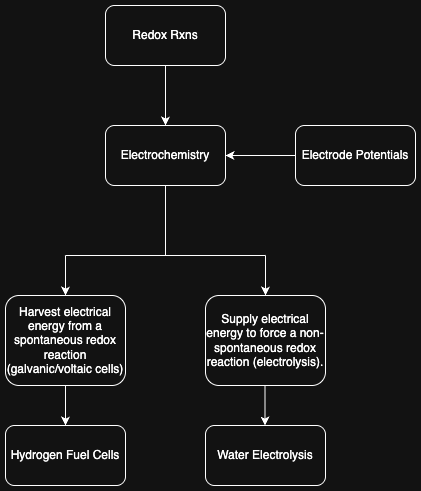

Terraformer Research Project Writeup
Arihant Gadgade
Terraformer Research Project Directory
Date Published: 6/26/2025
Contents
1. Introduction üîù
[Chemical Rxn Diagrams from Terraform Industries website]
Terraformer Overview:
The Terraformer is a machine that capture carbon dioxide and produces methane.
The Terraformer is comprised of 3 subunits:
1. Direct Air Carbon Capture system
2. Electrolyzer
3. Methanation
The carbon capture unit is what's responsible for combatting climate change
by removing CO2 from the atmosphere.
The electrolyzer creates the hydrogen gas from water necessary for the "hydro"
in hydrocarbons.
Methanation is the money maker, this is where we take CO2 and H2
and turn them into our useful CH4 product. Thus, allowing us to successfully
monetize carbon capture, not to mention this will be cheaper than current methods of
methane production.
Project Overview:
I will be covering the science and processes of each of the subunits. I will be focusing my efforts
on the carbon capture system, as that is the subunit I will build and do experiments with.
2. Direct Air Capture üîù
2.1. Purpose üîù
Direct air capture (DAC) is how we are performing carbon capture. We need carbon dioxide and hydrogen to create the methane, and thus this DAC is used to get the CO2.
2.2. Overview of Science and Processes üîù
Simply: air goes in, then CO2 from the air is removed,
the rest of the air leaves, and the captured CO2
is sent for methanation.
Breaking this into parts:
1. Air goes in: achieved with fans
2. CO2 from the air is removed: carbonation using calcium hydroxide
3. Captured CO2 is sent for methanation: calcination using kilns
Steps 2 and 3 are part of the lime cycle.
Lime Cycle:
The lime cycle is useful for understanding calcium looping which is the backbone of our DAC.
Calcium Looping:
Slaking: CaO(s) + H2O(g) -> Ca(OH)2(s) ΔH = -110.2 kJ/mol [enthalpy change calculated using standard enthalpy of formation sourced from the Wikipedia page of each of these compounds]
Carbonation: Ca(OH)2(s) + CO2(g) -> CaCO3(s) + H2O(g) ΔH = -68.3 kJ/mol
Calcination: CaCO3(s) -> CaO(s) + CO2(g) ΔH = +178.5 kJ/mol
This resulting CaO is then looped back into the first reaction,
and the process repeats.
Should be noted that CaO degrades over time:
source
So, as the CaO is not infinitely reusable, this must be accounted for in the design of the DAC.
Sorbents:
The process of carbonation uses calcium hydroxide as a sorbent for absorbing carbon dioxide.
Map of sorption:
Sorption: process by which one substance becomes attached to another
- Adsorption: substance taken up by the surface of another
- Physisorption
- Chemisorption
- Absorption: substance taken up by the bulk phase of another
- Physical Absorption
- Chemical Absorption
In this map, carbonation using calcium hydroxide is under chemical absorption.
Carbon dioxide is taken up by the bulk phase of the calcium hydroxide, in turn producing
calcium carbonate and water. Our DAC system will have to facilitate this absorption, which
we'll do with a fluidized bed.
Kilns:
Let's look at the temperature needed to run the calcination.
To do this we'll use the Gibbs free energy.
ΔG° = ΔH° - TΔS°
We already have the enthalpy change of the reaction (+178.5 kJ/mol),
we only need the entropy change.
ΔS = (40 + 214) - 93 J/(K*mol) = 161 J/(K*mol) [Std molar entropy sourced from wiki]
Solving for equilibrium temp:
ΔG° ≤ 0 ⇒ Teq=ΔH°/ΔS° = 178000/161 = 1109 K = 836°C
Thus, the temperature to run the kiln for calcination is:
T ≥ 836°C
We'll probably want to run the kilns at 850-900°C for a healthy driving force.
However, running above 950°C will contribute to sintering, decreasing the life of our sorbent.
Let's look at the kilns they are using:
"In the kiln area we have 5 kW and 15 kW commercial grade pottery kilns, as well as a production prototype 60 kW calcination oven (“the toaster”). Its design differs substantially from the kilns as its material can be contained in long, flat shapes that have better heat transfer properties."
 [Taken from TI Whitepaper 2.0]
[Taken from TI Whitepaper 2.0] ***I believe "the toaster" is on the pallet on the left of the image.
2.3. Designing the DAC üîù
[Disclaimer: I am just trying to recreate the system from what they've published as there isn't an exact blueprint to follow, so there may be innacuracies.]
Ok, so now we've went over the science we can start trying to design the system.
They gave an overview of the calcium concentration cycle in their
first whitepaper (so their design might've changed), and I'll base the schematics off that.
 [Image from: TI Whitepaper]
[Image from: TI Whitepaper]
Rough Diagram:
 In this diagram we see the humidifier, CO2 absorption bed, dehydrator, and calciner.
The humidifier can arguably be incorporated into the absorption bed. The processes we see from the
lime cycle (calcium looping) are the calcination in the calciner and the slaking and carbonation simultaneously in
the CO2 absorption bed. We can also see this unit's rxns are not 1:1 with the lime cycle we discussed
earlier.
In this diagram we see the humidifier, CO2 absorption bed, dehydrator, and calciner.
The humidifier can arguably be incorporated into the absorption bed. The processes we see from the
lime cycle (calcium looping) are the calcination in the calciner and the slaking and carbonation simultaneously in
the CO2 absorption bed. We can also see this unit's rxns are not 1:1 with the lime cycle we discussed
earlier.
I haven't included it, but there should also be some mechanism for new calcium carbonate to be fed in as the calcium oxide
degrades.
DAC as a Chemical Reactor:
Overview Map of Chemical Reactors:
- Batch Reactors
- Semi-Batch Reactors
- Continuous Reactors
- Plug-Flow Reactors
- Continuous Stirred Tank Reactors (CSTR)
- Fluidized-Bed Reactors
They stated this cycle can be performed with continuous or batch material processing machinery,
but for these purposes I am considering this as a continuous reactor. The calciner and pre-calciner subunits
behave as plug-flow reactors, and the absortion bed behaves as a fluidized-bed reactor. Thus, the whole unit is acting
as a continuous reactor.
Fluidization test image from TI Whitepaper 2.0:
Here we see in the red, the sorbent being fluidized, with gas presumably coming up through the floor of the bed.
2.4. Experiment üîù
I had the idea to create a mini carbon capture unit, as the fundamental chemical rxns are quite simple. I initially considered just making a mini fluidized bed, but figured that would be overkill for a first attempt, and decided to just try to do simple carbonation of calcium hydroxide with the captured air. In researching this, I found there were some open source attempts at doing so, one that stood out was OpenAir Cyan by Dahl Winters. Cyan uses the similar chemical rxn I was planning on doing. While researching, I saw that to facilitate the rxn, having the relative humidity be high allowed faster rxn rates. I was considering using a humidifier (steam or ultrasonic) and fan system, but found Cyan's approach to be quite good. Cyan uses an aquarium bubbler and airstone in a reservoir of water to increase the humidity. This solution was quite useful because the bubbler diffuses the captured air and water into the unit's air, which allows me to not have to worry about the fan system (unless I cared about drying).
Experiment Outline:
1. Design and build a reaction chamber that carbonates calcium hydroxide with captured CO2
2. Run the rxn chamber
3. Calculate captured CO2
4. Analyze how much carbon was offset by comparing the captured CO2
to the carbon footprint of the electricity used
Materials:
- 3D printed rxn chamber container
- Aquarium air pump
- Air stone and tubing
- Calcium hydroxide
- Coffee filter
- Distilled water
DAC CAD:
[Fun: DAC CAD is a palindrome]
Here's a CAD model of the reaction chamber for the DAC:
It's a simple container that allows for the tubing of the air bubbler to enter,
a shelf for the calcium hydroxide to lie, and a tiny hole in the lid for air to escape.
DAC Unit:
Here's images of the 3D printed DAC reaction chamber:

 Here we see the bubbler, the bubbler tubing being fed in the rxn chamber, and the attached airstone:
Here we see the bubbler, the bubbler tubing being fed in the rxn chamber, and the attached airstone:

Running the Experiment:
1. I measured out 5g of calcium hydroxide
 2. I let it run for 6hrs.
2. I let it run for 6hrs.
Visual of what's occuring inside the reaction chamber:
 Closed and running rxn chamber:
Closed and running rxn chamber:
 3. With the air pump off, I let the solid mass dry overnight in the
humidified rxn chamber (14hrs). [This process is quite similar to recarbonation
of cured concrete, where calcium hydroxide reuptakes CO2]
3. With the air pump off, I let the solid mass dry overnight in the
humidified rxn chamber (14hrs). [This process is quite similar to recarbonation
of cured concrete, where calcium hydroxide reuptakes CO2]
Here's the weight of the hydrated solid mass, immediately after taking it out of the rxn chamber:
 4. After letting it dry overnight, I then let it air dry outside of the DAC to thoroughly
evaporate all the water for one day.
4. After letting it dry overnight, I then let it air dry outside of the DAC to thoroughly
evaporate all the water for one day.
Here's the weight of the dehydrated solid mass:
 Note the change in texture of the solid mass from fine to clumpy.
Note the change in texture of the solid mass from fine to clumpy.
Results:
Remeasuring the powder gives us:
Final solid mass: 5.751g
Solid mass change: 5.751g - 5g = .751g
Analysis:
First, we want to find out how much CO2 was captured.
To start, here's the rxn governing the CO2 uptake:
Carbonation: Ca(OH)2(s) + CO2(g) -> CaCO3(s) + H2O(g)
Analyzing this rxn necessitates calculating molar mass:
Calcium atomic mass: 40.08u
Oxygen atomic mass: 15.999u
Hydrogen atomic mass: 1.008u
Carbon atomic mass: 12.011u
Ca(OH)2 molar mass: 1*(40.08) + 2*(15.999 + 1.008) = 74.094 g/mol
CO2 molar mass: 1*(12.011) + 2*(15.999) = 44.009 g/mol
CaCO3 molar mass: 1*(40.08) + 1*(12.011) + 3*(15.999) = 100.088 g/mol
H2O molar mass: 2*(1.008) + 1*(15.999) = 18.015 g/mol
Gain in solid mass:
(CaCO3 molar mass) - (Ca(OH)2 molar mass): 100.088 - 74.094 = 25.994 g/mol
Each mole of rxn also consumes one mole of CO2, so we can find a ratio to measure CO2 uptake:
(CO2 molar mass) / (Gain in solid mass): 44.009 / 25.994 = 1.693
Thus, for every gram of gain in solid mass, 1.693g of CO2 is uptaken.
So, we uptook 1.271g of CO2 because we had a solid mass change of .751g.
Theoretical CO2 capture:
Solid mass ratio:
(CaCO3 molar mass) / (Ca(OH)2 molar mass) = 100.088 / 74.094 = 1.351
Thus, now we can see what the theoretical CaCO3 weight will be if all the Ca(OH)2 reacts:
5g Ca(OH)2 * 1.351 = 6.754g CaCO3
So we have a solid mass change of 1.754g, thus the theoretical mass of CO2 to be uptaken is:
Theoretical CO2 uptake: 1.754g * 1.693 = 2.97g CO2
Comparing that to the experimental CO2 uptake:
1.27 / 2.97 = 42.7%
Thus an efficiency of 42.7% was achieved.
Now let's compare the carbon we uptook to the amount used in electricity to run the air pump.
This allows us to analyze whether we are carbon negative or not.
Air pump electric usage: 2.9W
Hours air pump ran: 6 hr
Thus:
Total electrical energy used: 17.4 Wh
Calculating the CO2 used for this electricity:
Total output (baseload) emission rate: 893.3 (lb CO2/MWh) [source]
Converting it to g/Wh:
Total output (baseload) emission rate: 0.405 (g CO2/Wh)
Thus the amount of CO2 used running this DAC was:
17.4 Wh * 0.405 (g CO2/Wh) = 7.047g CO2
Thus comparing this to the 1.27g of CO2 captured we are not net negative carbon.
Discussion:
I believe an easy way I could have optimized this to get to net negative would be to
make a bigger DAC (allowing for more calcium hydroxide to be carbonated) or run the
air pump for much less time. Running the air pump for less time is achievable by having
a relative humidity sensor regulating the usage of the air pump.
They had a kiln at my school (in the material science makerspace), but it was unavailable,
otherwise I could try to calcinate the powder and capture the CO2.
2.5. Extra üîù
Overview of Carbon Capture Methods:
1. Point Source Capture: Captures CO2 directly from concentrated emissions (e.g., power plants, industrial boilers) before it enters the atmosphere
2. Direct Air Capture (DAC): Extracts CO2 from atmosphere (~415 ppm)
3. Bio Based Capture: Leveraging biological processes to capture and store carbon
4. Mineralization & Weathering: Locks CO2 into stable carbonate minerals, mimicking natural rock weathering but on accelerated timescales
5. Ocean Based Approaches: Manipulate seawater chemistry to increase its capacity to absorb and store CO2
6. Utilization (CCU): Transforms captured CO2 into valuable products
Terraformer uses a combo of 2 and 6. (And 4 as an intermediary)
Mathematica:
Playing around with Mathematica to visualize the chemical structure
of the species in the calcium looping rxns:
 Note: Mathematica displays ionic formulae as separate fragments unless you draw a bond.
Note: Mathematica displays ionic formulae as separate fragments unless you draw a bond.
And 3D as well:
Limestone Quarry:
Videos showing limestone quarries:
video1,
video2,
video3
Fun Veritasium Concrete Vid:
Limestone (mainly CaCO3) is the primary component used to make cement/concrete,
and it mainly comes from ancient sealife. Thus the fun quote: "skyscrapers are made from seashells" which
can be seen in this
Veritasium video.
Cracking CO2:
Considering how the majority of the energy demand for the Terraformer comes from
the electrolyzer, and the goals of TI are to solve climate change profitably, it may
be worthwhile to looking into cracking CO2. Cracking CO2 gives
us the elemental carbon and oxygen. Carbon is quite useful, so if we could find a way
to economically produce carbon from captured CO2, then we've found a way to make a
profitable carbon negative process, as opposed to just the carbon neutrality of the
current Terraformer. However CO2 is quite stable, so further analysis is needed.
3. Electrolyzer üîù
3.1. Purpose üîù
Electrolysis is how we are producing H2. We need carbon dioxide and hydrogen to create the methane, and thus this electrolyzer is used for producing H2 from H2O.
3.2. Overview of Science and Processes üîù
The basic idea of electrolysis of water is producing hydrogen and oxygen gas
by splitting water using electricty. Overall chemical equation:
2H2O(l) -> 2H2(g) + O2(g)
We get to electrolysis from redox rxns and electrochemistry:

Great vid by Tyler DeWitt on electrolysis: YouTube link
Water Electrolysis:
Taking a look at the annotated redox rxn of water electrolysis:
Let's try to find the voltage necessary for running this rxn.
To do so we'll look at reduction potentials. Note that we're assuming an
alkaline water electrolysis stack with potassium hydroxide as the electrolyte.
Basic diagram of alkaline water electrolysis:
[img src]
Water electrolysis eqns from a table of standard electrode potentials from Wikipedia:
Using this we see the necessary voltage for water electrolysis. Eqn1
determines the cathodic H2 half rxn, eqn2
determines the anodic O2 half rxn. The reduction potentials of both
allow us to determine the standard cell potential in eqn3 as 1.23V.
1.23V is the thermodynamic minimum cell voltage for splitting pure liquid water
into H2 and O2 in the standard state (298 K, 1 bar). In practice,
a higher voltage is needed.
Electrolyzer Model/Experiment:
Ok now we've got an idea of the science behind alkaline water electrolysis,
how do we build a practical model?
We've diagrammed a very simple alkaline water electrolysis experiment above, and I will
explain the components now:
- Container: must be resistant to caustics
- Electrolyte solution: water with dissolved KOH, giving lots of free K+ and OH- ions
- Electrodes: nickel cathode and anode
- Battery: 9V battery attached with leads to the electrodes
As soon as one connects the battery, the circuit closes, electrons
flow from negative terminal to cathode to anode then back into positive terminal. Thus:
1. At the cathode electrons flow into the water, water molecules around the cathode
pick up electrons and splits into hydrogen gas and hydroxide ions:
2H2O + 2e- -> H2(g) + 2OH-
Thus we see hydrogen bubbles rising off the cathode.
2. At the anode electrons are pulled out of the solution, hydroxide ions give up
electrons and combine to form oxygen gas and water:
4OH- -> O2(g) + 2H2O + 4e-
Thus we see oxygen bubbles rising off the anode.
Hence we get the overall eqn:
2H2O(l) -> 2H2(g) + O2(g)
And then we can add in a diaphragm between the electrodes to allow the electrolysis to
take place while seperating the hydrogen and oxygen gases. This porous diaphragm
does so by allowing the OH- ions migrate to carry the current, but blocks the
hydrogen and oxygen gas from mixing.
Thus, now we can capture the hydrogen gas.
3.3. Extra üîù
Images from Terraform Industries Blog:
KOH alkaline solution and graphite electrodes:
[From TI Whitepaper]
Electrolysis test rigs:
[From TI Whitepaper 2.0]
4. Methanation üîù
4.1. Purpose üîù
The purpose of the Sabatier reactor is to convert carbon dioxide and hydrogen gas into methane. This subunit is responsible for the final profuct of the Terraformer.
4.2. Overview of Science and Processes üîù
The Sabatier Reaction occurs when carbon dioxide and hydrogen
react to produce methane and water. This reaction takes place
at 400°C, 3MPa, and in the presence of a nickel catalyst.
The exact mechanism by which the Sabatier Rxn acts is disagreed upon.
Sabatier Rxn:
CO2 + H2 -> CH4 + 2H2O ΔH=-165 kJ/mol
By the negative enthalpy, we see this is an exothermic rxn.
The reaction takes place by way of catalytic hydrogenation of
CO2, thus reduction of CO2.
Reduction Half Rxn:
CO2 + 8H+ + 8e- -> CH4 + 2H2O
Oxidation Half Rxn:
4H2 -> 8H+ + 8e-
Diagram of a Sabatier Reactor:
1. Hydrogen and oxygen gas is fed into a Mass Flow Controller (MFC)
2. MFC to set H2:CO2 ratio at 4:1, then pressurizes it to 3MPa
3. The reactor is a fixed bed tube with nickel catalyst. Heating system lets reaction take place
at 400°C.
4. Condenser rapidly cools the hot reactor effluent, thus seperating steam from methane by turning
the steam into liquid water.
5. The gas that exits the sabatier reactor is done so such that it is stored properly. Gas analysis
can be done with gas chromatograph.
4.3. Extra üîù
Images from Terraform Industries Blog:
Gen 1 Reactor Test Rig:
[From TI Whitepaper 2.0]